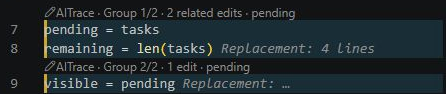
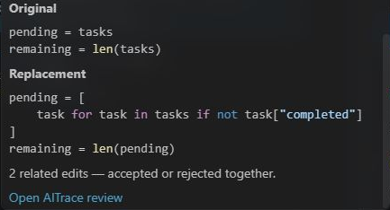
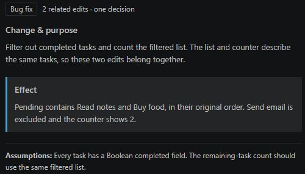
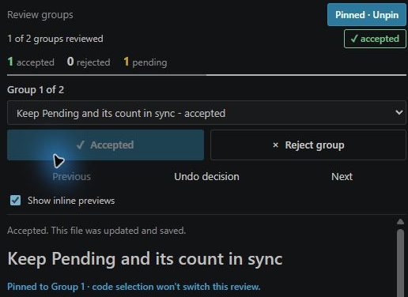

Alpha System
Design Evolution
We revised the comparison, controls, explanations and review groups after Group I's feedback. We also added clearer decision counts after reviewing the prototype ourselves.
Clearer code comparisons
Change. We replaced the ambiguous plus sign with short Replacement labels. Each group has a highlighted code block, a status marker and a review link. Hovering over the code shows the full Original and Replacement blocks in a scrollable popup. Users can hide inline previews while keeping the highlights, hover previews and review links.
Rationale. Group I reported confusion about whether the preview was added code, a replacement, or part of the file itself. Short labels keep the editor less crowded, while the hover preview lets users compare code in place. Within VS Code's extension interface, we kept the full explanation and controls in a panel beside the code.
Keep review controls together
Change. We put Accept, Reject, Undo, Previous and Next in one fixed area at the top. Accept and Reject have distinct button styles and symbols. We also made Pin more visible: the button reads Pin this group, changes to Pinned · Unpin when active, and the panel identifies the pinned group.
Rationale. In Group I's test, one participant reported that the window jumped when using the lower controls. Keeping the buttons together removes the need to scroll down for Undo or navigation. We also made the pin state clearer so users can tell whether the explanation will follow their code selection.
Explain the purpose and effect
Change. We added Bug fix and Behaviour change labels. A short Change & purpose paragraph brings the explanation together, followed by an Effect block with a contrasting background and side line. Assumptions stay nearby, while the example and task reference can be expanded when needed.
Rationale. Group I reported that participants found the explanations but still spent time checking the code. One participant asked for the modification type and clearer context. We brought the change and its reason together, then gave the expected effect its own visible block. This keeps the explanation short while making the outcome easier to find.
Review related edits together
Change. We combined the incomplete-task filter and its counter into one review group. They share an explanation and are accepted, rejected or undone together. The alphabetical sort stays in a separate group, and the controls and counters now refer to groups.
Rationale. Group I suggested grouping edits that depend on each other. In our sample, accepting the filter alone could leave the counter showing the wrong number. Reviewing both together prevents that incomplete repair. Sorting changes the order independently and can still be rejected. These groups are defined in the prepared sample.
Show what was kept
Change. We added separate accepted, rejected and pending group counts beside overall progress. The numbers update after each decision, Undo and Reset. Status labels also use symbols and colour, so colour is not the only cue.
Rationale. The old reviewed count combined accepted and rejected changes. We added the breakdown so users can see what they kept and what remains, without reopening every group. It uses the states already tracked by the plugin.
Prototype Implementation
AITrace runs as a VS Code extension. The editor shows the affected code, and the panel beside it holds the explanation and review controls. The Pending sample contains three edits in two groups: the filter and counter together, and the sort separately.
Accepting a group updates and saves the sample file. Rejecting it keeps or restores its original code, and Undo reverses the last decision. Selecting code opens its group unless the panel is pinned. Manual edits pause review decisions to protect those edits.
The prototype works offline with prepared suggestions, groups and explanations. Users can complete the review without a facilitator switching screens or applying decisions for them. It does not connect to an AI service, generate explanations for new code or group arbitrary code automatically.
Download
Download AITrace for VS Code (.vsix)
Demo




Prototype Revisions
Our project proposal focuses on helping users locate AI code changes, understand their purpose and effects, and choose what to keep. The alpha supports this workflow in the prepared cases. The table below connects each working revision to the problem it addresses.
| Issue identified | Revision implemented | Usability benefit |
|---|---|---|
| Group I reported confusion between preview text and actual code. | Highlighted groups, short Replacement labels, and full Original/Replacement blocks in the hover popup and panel. | Makes proposed edits easier to distinguish from saved code and compare in place. |
| Group I suggested grouping dependent edits. Our filter and counter could become inconsistent when reviewed separately. | The filter and counter now share one accept, reject or undo action. Sorting remains independent. | Prevents this incomplete repair and lets users decide by purpose rather than individual lines. |
| In Group I's test, a participant reported jumping when using controls below the explanation. | Fixed review controls at the top, clearer decision buttons, and an explicit Pin this group toggle. | Keeps actions within reach and lets users hold an explanation open while inspecting other code. |
| Group I asked for a clearer modification type and context. | A type label, a combined Change & purpose paragraph, and an emphasized Effect block with nearby assumptions. | Puts the reason and expected outcome together, so users have less separate text to search. |
| Our review found that the old progress count hid the difference between accepted and rejected changes. | Separate accepted, rejected and pending group counts, updated with decisions, Undo and Reset. | Makes outcomes and remaining work visible without reopening each group. |
User Manual
This illustrated guide covers installation, group review, hover comparisons and pinning in AITrace.
Open user manual (PDF) · Download AITrace Prototype (.vsix)
User Manual Modifications
We revised the previous guide and replaced its screenshots to show group decisions, hover comparisons and the fixed review controls. The instructions explain Pin, the shorter explanation layout and the separate group counts. They also make clear that accepting one group can apply more than one edit.